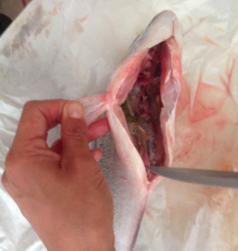
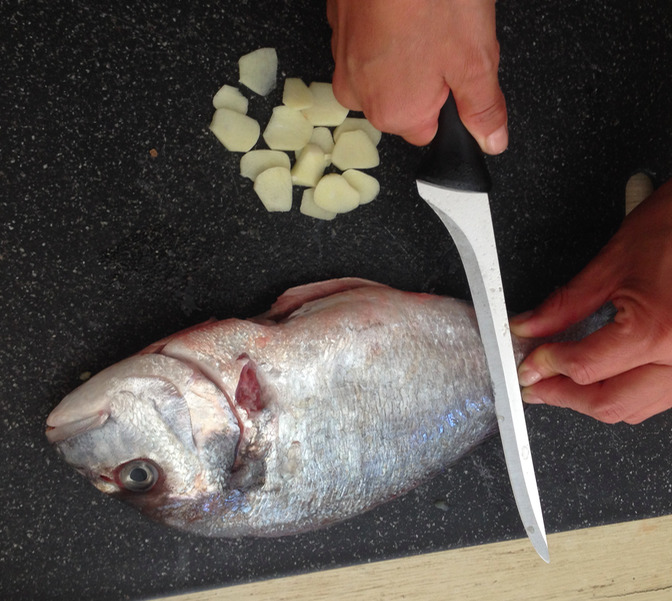
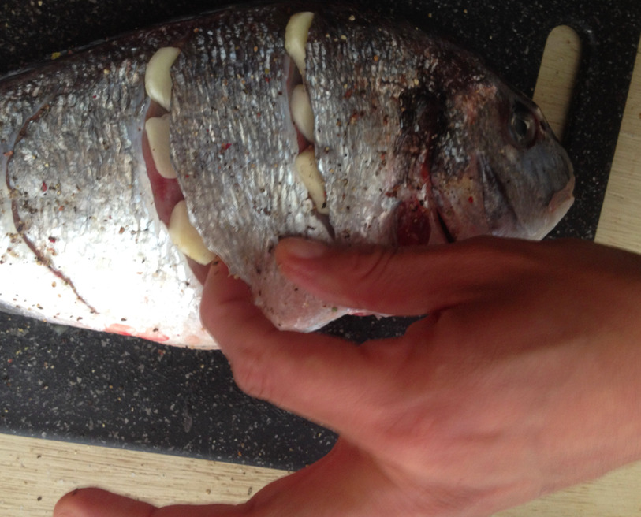
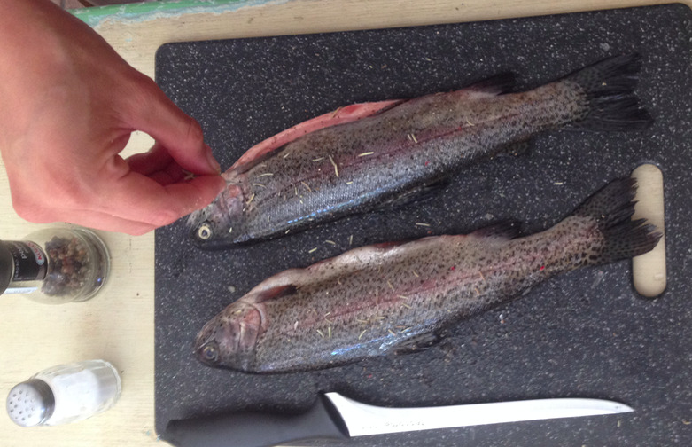
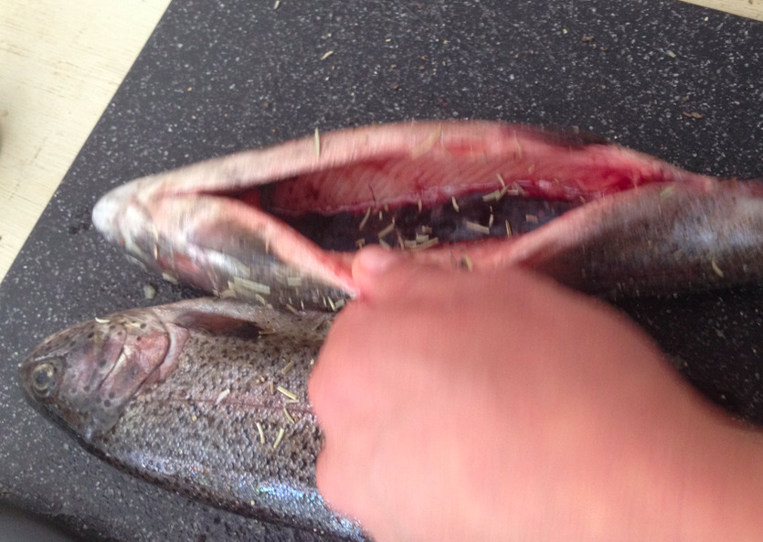
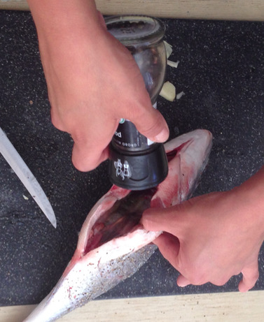
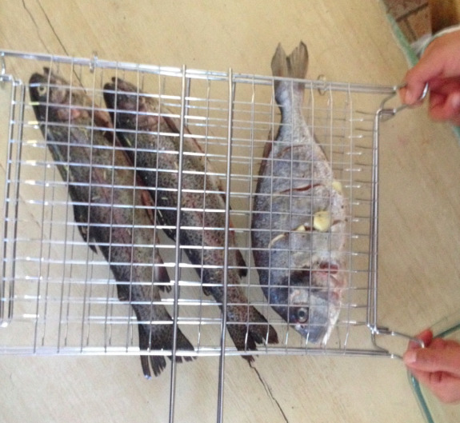
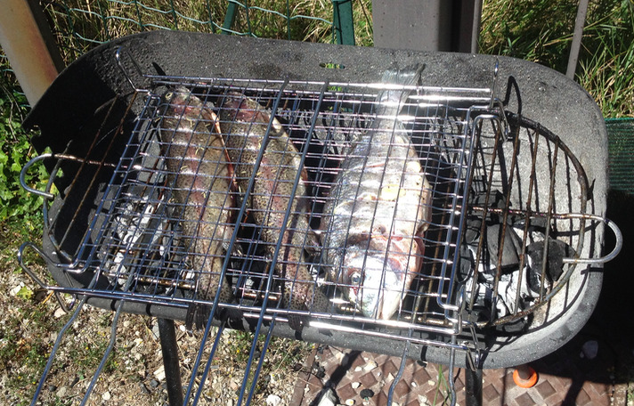
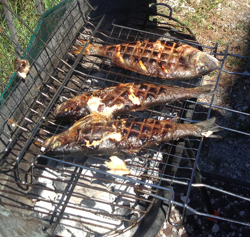
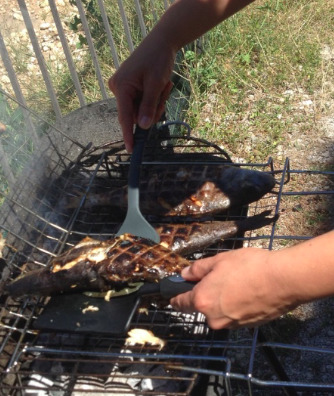

Trout and see bream barbeque¶
- Serves: 2
- Type: main
Note¶
This recipe describes a barbeque with to fish species, trout and sea bream. They can also be prepared independently.
Ingredients¶
- Trout (one per person)
- Sea bream (one per two people)
- Rosemary
- Garlic
- Salt: 1 tablespoon
- Black pepper: 1 teaspoon
Tools¶
- Barbeque
- Two-side steel grid for barbeque
Steps¶
If the fish still have their guts, remove them first after making a cut in the ventral (belly) side.
Ventral cut used to remove the guts
Wash the fish, and dry them with paper afterwards
Cut the garlic in slices.
For the sea bream, make garlic pockets by making cuts laterally (on the sides).
Lateral cuts for garlic
Place the garlic in these lateral pockets and also in the ventral incision.
Garlic pockets
Place the garlic in these lateral pockets and also in the ventral incision.
For the trout, sprinkle dry rosemary on both sides and also in the ventral incision.
Add rosemary on both sides
Add rosemary in the ventral incision
For both fish, add salt and black pepper on both sides and also in the ventral incision.
Add salt and pepper in the ventral incision
Place the fish in the grid
Place the fish in the grid
Place the grid with the fish on the barbeque
Fish on the barbeque
Cook for about 10 minutes for each side.
Fish after cooking on the barbeque ready
Remove the fish from the barbeque.
Remove the fish from the barbeque